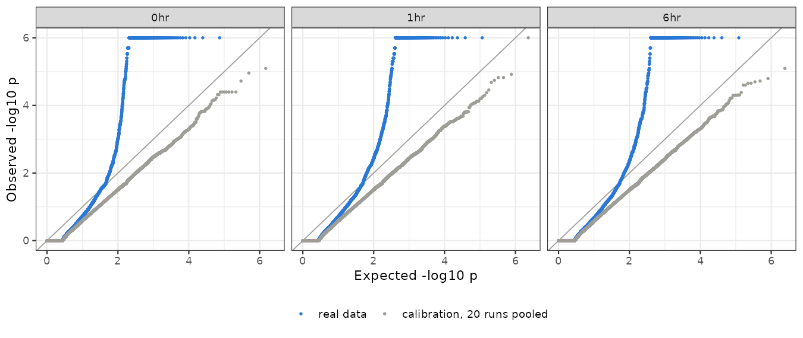
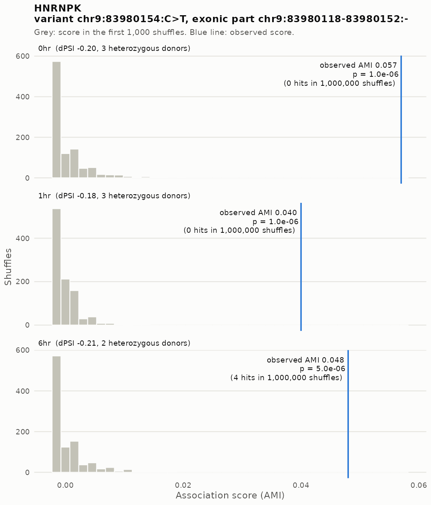
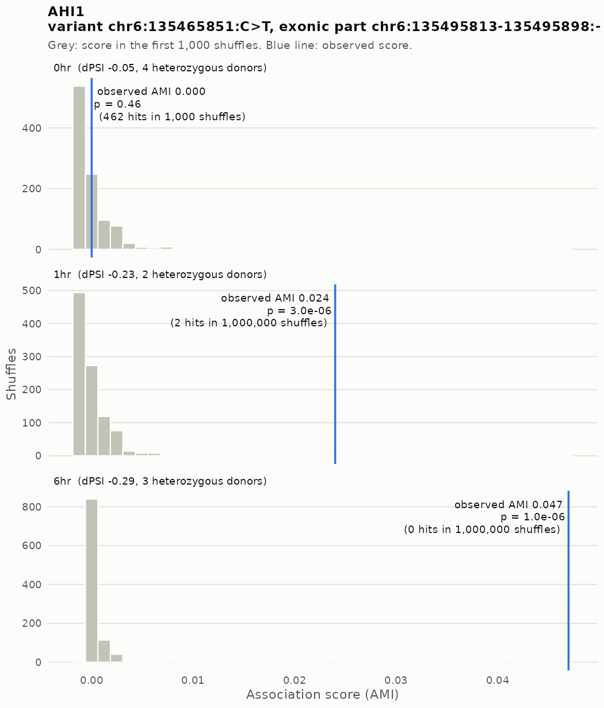
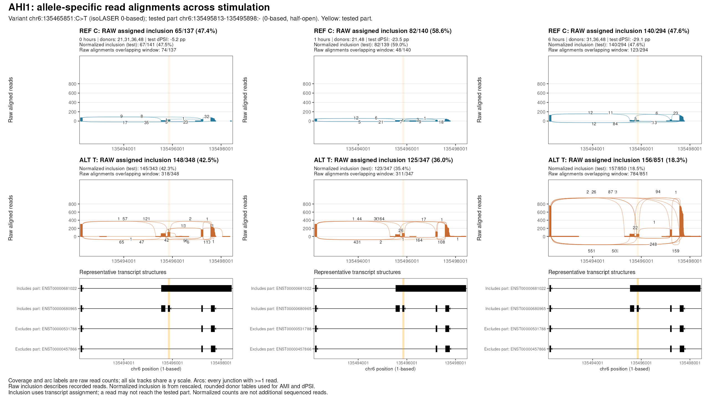
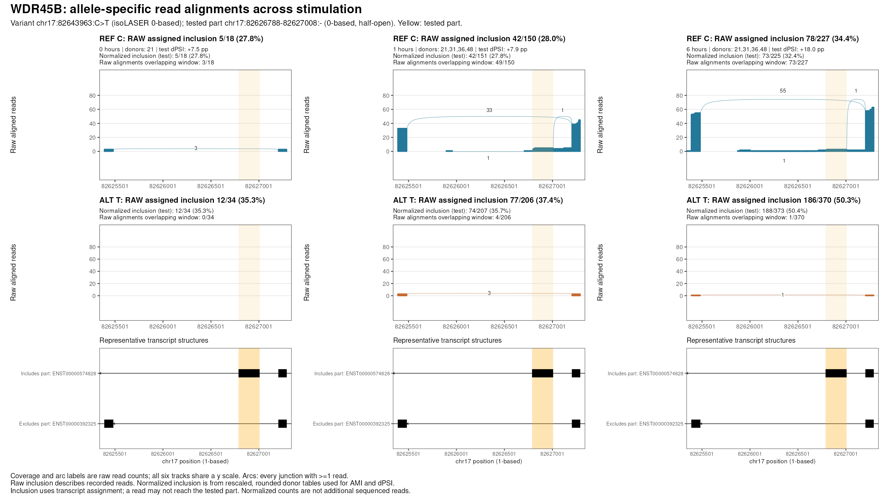
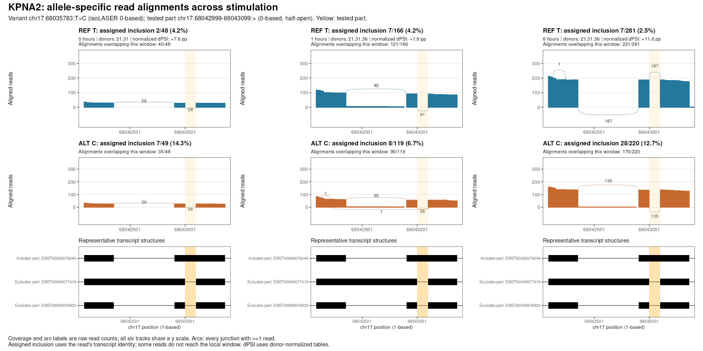

Last updated: 2026-10-20
Checks: 6 1
Knit directory: long_read_rna/
This reproducible R Markdown analysis was created with workflowr (version 1.7.0). The Checks tab describes the reproducibility checks that were applied when the results were created. The Past versions tab lists the development history.
The R Markdown file has unstaged changes. To know which version of
the R Markdown file created these results, you’ll want to first commit
it to the Git repo. If you’re still working on the analysis, you can
ignore this warning. When you’re finished, you can run
wflow_publish to commit the R Markdown file and build the
HTML.
Great job! The global environment was empty. Objects defined in the global environment can affect the analysis in your R Markdown file in unknown ways. For reproduciblity it’s best to always run the code in an empty environment.
The command set.seed(20260908) was run prior to running
the code in the R Markdown file. Setting a seed ensures that any results
that rely on randomness, e.g. subsampling or permutations, are
reproducible.
Great job! Recording the operating system, R version, and package versions is critical for reproducibility.
Nice! There were no cached chunks for this analysis, so you can be confident that you successfully produced the results during this run.
Great job! Using relative paths to the files within your workflowr project makes it easier to run your code on other machines.
Great! You are using Git for version control. Tracking code development and connecting the code version to the results is critical for reproducibility.
The results in this page were generated with repository version af10976. See the Past versions tab to see a history of the changes made to the R Markdown and HTML files.
Note that you need to be careful to ensure that all relevant files for
the analysis have been committed to Git prior to generating the results
(you can use wflow_publish or
wflow_git_commit). workflowr only checks the R Markdown
file, but you know if there are other scripts or data files that it
depends on. Below is the status of the Git repository when the results
were generated:
Unstaged changes:
Modified: analysis/isolaser_fdr.Rmd
Note that any generated files, e.g. HTML, png, CSS, etc., are not included in this status report because it is ok for generated content to have uncommitted changes.
These are the previous versions of the repository in which changes were
made to the R Markdown (analysis/isolaser_fdr.Rmd) and HTML
(docs/isolaser_fdr.html) files. If you’ve configured a
remote Git repository (see ?wflow_git_remote), click on the
hyperlinks in the table below to view the files as they were in that
past version.
| File | Version | Author | Date | Message |
|---|---|---|---|---|
| Rmd | 17e5230 | XSun | 2026-10-15 | update |
| html | 17e5230 | XSun | 2026-10-15 | update |
| html | 2f55116 | XSun | 2026-10-14 | update |
| Rmd | a282ef5 | XSun | 2026-10-14 | update |
| html | a282ef5 | XSun | 2026-10-14 | update |
We extended the chr9 permutation pilot to all 22 autosomes at baseline, 1 hour and 6 hours, using four donors. The aim is to attach a permutation p-value and a BH-adjusted p-value (q-value) to each allele–splicing association, with correction performed separately within each timepoint.
Main result: 375 associations in 131
genes have q < 0.05 and pass the original cis /
effect-size screen. 25 genes meet these criteria at all three
timepoints. Calibration found no excess of false discoveries under the
chosen permutation null; its limits are described below.
| Timepoint | Tested associations | Paper’s cutoff | Screen | Screen + q < 0.10 | Screen + q < 0.05 |
|---|---|---|---|---|---|
| 0hr | 37,156 | 10,419 (978) | 530 (191) | 215 (71) | 191 (64) |
| 1hr | 57,517 | 11,880 (1,362) | 773 (288) | 223 (95) | 183 (73) |
| 6hr | 60,860 | 12,086 (1,350) | 759 (285) | 229 (87) | 174 (74) |
| any timepoint | 77,954 | 23,251 (2,101) | 1,675 (561) | 472 (158) | 375 (131) |
Cells other than Tested associations show associations (genes).
cis
call with no other filter, as in the isoLASER paper. It comes from
isoLASER-joint, which pools every donor with ≥ 10 reads, homozygous
donors included. It is counted over every association isoLASER reports,
so it is not a subset of our tested associations. Above about 2,370
pooled reads, isoLASER’s cis threshold falls below zero, so
this column includes many calls with no effect.cis rule recomputed on
heterozygous donors only, plus |ΔPSI| ≥ 0.10. A tested association has
at least one heterozygous donor (RNA allele fraction 0.25–0.75) with ≥
30 informative reads, an exonic part ≥ 10 bp, and no other tested
variant within 30 bp.At q < 0.05, 23% of the screen’s genes remain; q < 0.10 adds 27 genes. These counts use the recording rerun, so they can differ slightly from the original genome-wide screen.
Any timepoint counts each gene or variant–part association once across timepoints. BH targets FDR in each timepoint’s full association family. The effect-filtered subset shown here, its gene totals, and the union across timepoints do not have a separate 5% FDR guarantee. Gene totals count genes containing a qualifying association; they are not gene-level adjusted tests.
An association is a gene × variant × exonic part at one timepoint. An exonic part is an interval defined by transcript exon boundaries and need not be a complete exon. Reads form a 2 × 2 table: reference/alternative allele × part included/excluded. We combine eligible donors’ tables using isoLASER’s own normalization and adjusted mutual information (AMI) functions. Higher AMI means stronger allele–splicing association; values near zero indicate little evidence, and slightly negative values are possible.
The tested family requires at least one donor with ≥30 informative reads and RNA alternative-allele fraction 0.25–0.75, a part ≥10 bp, and no other tested variant less than 30 bp away. The donor rule is our operational heterozygous-donor filter. Eligible associations without a computable observed score stay in the family with p = 1.
For each permutation, we shuffle haplotype labels among reads within donor, gene and phasing group. If a label changes, the read’s allele is flipped at every linked variant in that group. Unlabelled reads have their alleles shuffled per variant. Each read’s inclusion status, total coverage and the original eligible donor set stay fixed. Before shuffling, reconstruction and rescoring checks must reproduce the recording rerun’s tables.
We count a hit when the shuffled AMI is at least as high as the observed AMI. An undefined shuffled score also counts as a hit, conservatively:
\[ p = \frac{1 + \text{hits}}{1 + \text{shuffles}}. \]
Every association starts with 1,000 shuffles. Those with fewer than
20 hits continue to 10,000, 100,000 and finally 1,000,000 in total.
Checkpoints and the hit threshold were fixed in advance; this stopping
rule is conservative provided the underlying fixed-length permutation
tests are valid. BH is then applied to all eligible associations within
each timepoint, before selecting the cis / effect-size
examples.
| Timepoint | Stopped at 1,000 | Stopped at 10,000 | Stopped at 100,000 | Reached 1,000,000 |
|---|---|---|---|---|
| 0hr | 36,307 | 431 | 123 | 295 |
| 1hr | 56,319 | 733 | 204 | 261 |
| 6hr | 59,674 | 696 | 218 | 272 |
Stopped means the association had at least 20 hits at that checkpoint, or had no observed score and received p = 1. Zero hits after a million shuffles gives p = 1/1,000,001, approximately 10⁻⁶. Every tested association at this minimum p-value has q < 0.05 in the current results.
We created 20 independently shuffled pseudo-observed datasets per timepoint and repeated the complete adaptive test and BH correction on each. Donor eligibility was chosen from the original data and held fixed. These 60 analyses are designed to remove the allele–splicing link: a discovery in them is a false positive under this null. BH can occasionally report one even when all associations are null, so we assess the frequency across runs.
| Timepoint | Null datasets | Datasets with a BH discovery | 95% interval for that rate |
|---|---|---|---|
| 0hr | 20 | 0/20 | 0.0% - 16.8% |
| 1hr | 20 | 0/20 | 0.0% - 16.8% |
| 6hr | 20 | 0/20 | 0.0% - 16.8% |
| Pooled across timepoints | 60 | 0/60 | 0.0% - 6.0% |
No dataset produced a BH discovery at q < 0.05; BY also produced none. The intervals are binomial confidence intervals for the chance of any discovery in an all-null analysis. Zero of 20 runs still allows a rate up to 16.8% per timepoint; pooling 60 datasets gives an upper bound of 6.0% for the average rate. Pooling does not establish control separately at each timepoint.
| Measure | Mean observed share | Approximate 95% interval | Nominal upper rate |
|---|---|---|---|
| share of p < 0.001 | 0.023% | 0.020% - 0.025% | 0.1% |
| share of p < 0.01 | 0.302% | 0.290% - 0.313% | 1.0% |
| share of p < 0.05 | 1.677% | 1.650% - 1.704% | 5.0% |
These are mean shares across the 60 datasets, with approximate intervals from the variation between runs. For example, p < 0.01 occurred for about 0.30% of associations, below the nominal 1%. Ties help explain this conservative behavior: when the observed and shuffled AMIs are both zero, a tie counts as a hit. AMI is rounded to three decimals by isoLASER.
Interpretation: calibration supports conservative behavior under our permutation null. It does not prove validity for every association or estimate the false-discovery proportion among the real-data results.

The QQ plot compares p-values with a uniform reference. Real data (blue) have more small p-values; calibration (grey) lies on or below the diagonal. The upper plateau reflects the minimum attainable p-value.
Here, reported means q < 0.05 plus the
cis / effect-size screen. A gene can contain several
associations, and different associations can qualify at different
timepoints.
| Pattern | Genes |
|---|---|
| Significant at 3 timepoints | 25 |
| Significant at 2 timepoints | 30 |
| One timepoint; nominal support elsewhere | 24 |
| One timepoint; no nominal support elsewhere | 21 |
| One timepoint; no usable score elsewhere | 31 |
For genes reported at only one timepoint, the last three categories describe the representative association at the other timepoints: nominal p < 0.05, p ≥ 0.05 where scored, or no usable score. They are descriptive categories, not tests of an allele × time interaction. Among comparisons of significant associations with another timepoint, 85% had nominal p < 0.05 there and 98% had the same effect direction.
For each gene, the table follows its strongest reported association. 0 / 1 / 6 hr show the allelic effect in percentage points, with pooled informative coverage in brackets. The stored effect is reference minus alternative exclusion, equivalently alternative minus reference inclusion: +10 means 10 percentage points higher inclusion on the alternative allele. Best q is the lowest timepoint-specific q-value for this association; Het donors is its maximum contributing donor count across timepoints, out of four. No score means that timepoint lacks a usable effect estimate.
| Gene | 0 hr | 1 hr | 6 hr | Best q | Het donors | Relevance |
|---|---|---|---|---|---|---|
| HNRNPK | -20 (303) | -18 (523) | -21 (326) | 2e-04 | 3 | Au-Kline syndrome (DDG2P), SFARI syndromic; GTEx brain sQTL comparison on the genome-wide page |
| ATL1 | +36 (592) | +34 (1,573) | +33 (1,694) | 2e-04 | 4 | Hereditary spastic paraplegia (DDG2P); neuron projection development (GO) |
| KANSL1 | -26 (117) | -20 (183) | -30 (310) | 4e-04 | 4 | Koolen-de Vries syndrome (DDG2P); SFARI score 1 |
| APLP2 | -24 (458) | -26 (602) | -31 (649) | 2e-04 | 3 | APP family member; neuron projection development (GO) |
These examples have neuronal or disorder annotations, but none meets our expression- or splicing-response flag described below. HNRNPK is a consistent allele-specific association across timepoints: zero hits in a million shuffles at 0 and 1 hour, and four hits at 6 hours.

Grey bars show only the first 1,000 shuffled scores; the blue line is the observed score. The displayed p-values use the full adaptive run.
AHI1 is reported at 1 and 6 hours; WDR45B and KPNA2 at 6 hours only. Their representative associations are weaker at earlier timepoints, making them candidates for a direct comparison of allelic effects over time.
| Gene | 0 hr | 1 hr | 6 hr | Best q | Het donors | Relevance |
|---|---|---|---|---|---|---|
| AHI1 | -5 (484) | -24 (486) | -29 (1,144) | 0.0004 | 4 | Joubert syndrome (DDG2P), SFARI syndromic; expression up 2.6-fold at 6 hr; junction-screen hit |
| WDR45B | +8 (52) | +8 (358) | +18 (598) | 0.0150 | 4 | Expression up 2.4-fold at 1 hr |
| KPNA2 | +8 (97) | +2 (284) | +12 (500) | 0.0032 | 3 | Synapse (GO); expression up 1.9-fold at 6 hr, below the 2-fold annotation rule |
For AHI1, variant chr6:135465851:C>T is significant for six exonic parts. The highlighted part has a small baseline effect (−5 percentage points, p = 0.46; 484 informative reads), compared with −24 and −29 points at 1 and 6 hours (p approximately 3 × 10⁻⁶ and 10⁻⁶). Other parts already show nominal baseline associations, and coverage increases at 6 hours. This is a follow-up candidate, not evidence that the variant becomes active only after stimulation.

The following isoLASER sashimi plots use its
nigiri_plot renderer, with the project’s plotting fixes and
a layout for comparing 0, 1 and 6 hours. Reads are separated into REF
and ALT using isoLASER’s recorded allele assignments for the
exact variant–part association. Each timepoint pools only
donors meeting the same criterion as the test: at least 30 informative
reads and an ALT fraction between 0.25 and 0.75. Donor IDs appear above
the tracks; the contributing donors can change between timepoints.
How to read these plots: blue is REF, orange is ALT,
and yellow marks the tested exonic part. Coverage heights and numbers on
the curves are raw alignment counts, with every
junction supported by at least one read shown
(-M 1 --min-junction-ratio 0). All six tracks within a gene
share the same coverage scale. The transcript diagrams show
representative local structures, not every isoform.
The inclusion percentage is a different quantity from an arc
count. A label such as 65/137 (47.4%) means 65
of 137 REF reads were assigned to transcripts containing the tested
part. isoLASER determines this from the read’s transcript assignment
(ZT); a partial read may not physically reach that part.
Each panel therefore also gives the number of reads that actually
overlap the displayed window. The reported dPSI uses donor-normalized
counts, so it need not equal the difference between the two raw pooled
percentages.
The calculations below distinguish raw recorded counts from the normalized counts used for the joint test, at every timepoint. Each fraction shows included / (included + excluded); inclusion and exclusion come from transcript assignments. No single junction arc is the statistical test. isoLASER tests the allele × part-included/excluded 2×2 table, using AMI as the permutation statistic. dPSI describes the effect size. Donor tables are scaled to their mean depth and rounded before pooling. Both AMI and dPSI use the normalized 2×2 table; the permutation p-value and BH q-value are based on that analysis. These rescaled counts are not extra sequenced reads. The sashimi coverage and arcs remain raw so they describe observed alignments.
For example, WDR45B at 1 hour has raw inclusion 42/150 = 28.0% REF and 77/206 = 37.4% ALT, a raw difference of +9.4 pp. The normalized test table instead has 42 included / 109 excluded for REF and 74 included / 133 excluded for ALT. Its effect is 100 × (74/207 − 42/151) = +7.9 pp, matching the reported dPSI. Both versions are now labelled in the figures and shown in the tables.
The highlighted 85-base part is an annotated exon in some transcripts; other transcripts skip it. Assigned inclusion is lower for ALT than REF, with a larger difference at 1 and 6 hours. Read depth and the donor set also change, so these panels do not establish an allele-by-stimulation interaction.

Tested association: chr6:135465851:C>T versus inclusion of the yellow 85-base part, chr6:135495813–135495898 (isoLASER’s 0-based coordinates). Arcs jumping over this part support exclusion; arcs joining it to neighboring exons support inclusion. The other arcs provide transcript context.
| Timepoint | Counts | REF inclusion | ALT inclusion | ALT minus REF (pp) |
|---|---|---|---|---|
| 0 hr | Raw recorded | 65 / (65 + 72) = 47.4% | 148 / (148 + 200) = 42.5% | -4.9 |
| 0 hr | Normalized (test) | 67 / (67 + 74) = 47.5% | 145 / (145 + 198) = 42.3% | -5.2 |
| 1 hr | Raw recorded | 82 / (82 + 58) = 58.6% | 125 / (125 + 222) = 36.0% | -22.5 |
| 1 hr | Normalized (test) | 82 / (82 + 57) = 59.0% | 123 / (123 + 224) = 35.4% | -23.5 |
| 6 hr | Raw recorded | 140 / (140 + 154) = 47.6% | 156 / (156 + 695) = 18.3% | -29.3 |
| 6 hr | Normalized (test) | 140 / (140 + 154) = 47.6% | 157 / (157 + 693) = 18.5% | -29.1 |
Where does the 140 come from? AHI1, 6 hr, REF allele:
| Donor | Part included | Part excluded |
|---|---|---|
| CD_31 | 46 | 59 |
| CD_36 | 39 | 47 |
| CD_48 | 55 | 48 |
| Total | 140 | 154 |
Included: 46 + 39 + 55 = 140. Excluded: 59 + 47 + 48 = 154. Therefore, 140 / (140 + 154) = 47.6%. Each read is counted once, using whether its assigned transcript contains the yellow part; these are not sums of arc labels. CD_21 is excluded at this timepoint because its ALT fraction (0.759) exceeds the donor-filter maximum of 0.75.
At 6 hr, the donor-normalized effect calculation is 100 x (157/850 - 140/294) = -29.1 percentage points (ALT inclusion minus REF inclusion).
Open AHI1 as PDF to enlarge junction labels.
This part belongs to an alternative exon near the transcript’s 3-prime end. Treat this as a candidate requiring validation. Many reads are assigned an inclusion status from their transcript identity without reaching this region: at 6 hours only 1 of 370 ALT reads overlaps the displayed window. The assigned ALT inclusion of 186/370 (50.3%) therefore has very little direct local alignment support in this plot. WDR45B is a weaker visualization example than its association statistics alone suggest.

Tested association: chr17:82643963:C>T versus inclusion of the yellow 220-base part, chr17:82626788–82627008 (0-based). The long arc crossing the yellow band supports its exclusion; the test counts assigned inclusion as well as exclusion, including partial reads that do not reach this window.
| Timepoint | Counts | REF inclusion | ALT inclusion | ALT minus REF (pp) |
|---|---|---|---|---|
| 0 hr | Raw recorded | 5 / (5 + 13) = 27.8% | 12 / (12 + 22) = 35.3% | +7.5 |
| 0 hr | Normalized (test) | 5 / (5 + 13) = 27.8% | 12 / (12 + 22) = 35.3% | +7.5 |
| 1 hr | Raw recorded | 42 / (42 + 108) = 28.0% | 77 / (77 + 129) = 37.4% | +9.4 |
| 1 hr | Normalized (test) | 42 / (42 + 109) = 27.8% | 74 / (74 + 133) = 35.7% | +7.9 |
| 6 hr | Raw recorded | 78 / (78 + 149) = 34.4% | 186 / (186 + 184) = 50.3% | +15.9 |
| 6 hr | Normalized (test) | 73 / (73 + 152) = 32.4% | 188 / (188 + 185) = 50.4% | +18.0 |
At 6 hr, the donor-normalized effect calculation is 100 x (188/373 - 73/225) = +18.0 percentage points (ALT inclusion minus REF inclusion).
The yellow 100-base part is removed as an intron in some transcripts and retained within a longer exon in others. An arc across the yellow interval supports removal of the part; continuous aligned coverage through it supports retention. Assigned inclusion is higher for ALT, with the largest normalized difference at 6 hours (+11.6 percentage points). Partial reads and transcript assignments still explain why the inclusion totals are not simply the sum of local junction counts.

Tested association: chr17:68035783:T>C versus retention of the yellow 100-base part, chr17:68042999–68043099 (0-based). The short arc exactly across this band supports removal, not retention: at 6 hr it has 187 REF and 135 ALT reads. Those arc counts are not the full excluded-read totals, because isoLASER uses transcript assignments for all informative reads.
| Timepoint | Counts | REF inclusion | ALT inclusion | ALT minus REF (pp) |
|---|---|---|---|---|
| 0 hr | Raw recorded | 2 / (2 + 46) = 4.2% | 7 / (7 + 42) = 14.3% | +10.1 |
| 0 hr | Normalized (test) | 3 / (3 + 44) = 6.4% | 7 / (7 + 43) = 14.0% | +7.6 |
| 1 hr | Raw recorded | 7 / (7 + 159) = 4.2% | 8 / (8 + 111) = 6.7% | +2.5 |
| 1 hr | Normalized (test) | 7 / (7 + 161) = 4.2% | 7 / (7 + 109) = 6.0% | +1.9 |
| 6 hr | Raw recorded | 7 / (7 + 274) = 2.5% | 28 / (28 + 192) = 12.7% | +10.2 |
| 6 hr | Normalized (test) | 7 / (7 + 280) = 2.4% | 30 / (30 + 183) = 14.1% | +11.6 |
At 6 hr, the donor-normalized effect calculation is 100 x (30/213 - 7/287) = +11.6 percentage points (ALT inclusion minus REF inclusion).
Download allele inclusion
counts and window coverage, per-donor raw count
tables, normalized testing
counts, per-donor
normalization, or the exact junction
counts. Reproducible scripts:
10.isolaser_permutation/25.sashimi_candidates.py and
26.sashimi_layout.R. Labels can be refreshed from the saved
alignment plots using 36.refresh_sashimi_labels.R; original
calling and permutation results are unchanged.
CACNA1E and PARK7 are also relevant neuronal examples in the full table. Both are reported at 1 hour with nominal support at another timepoint.
The table includes all 131 reported genes. The variant, part, timepoint effects, best q and donor count refer to the representative association; Significant at describes the gene across all its associations.
The four annotations below help select examples; they are exploratory and are not enrichment tests or evidence of stimulation-dependent allelic effects.
| Annotation | Rule |
|---|---|
| Neuronal GO term | Curated, non-electronic GO annotation to synapse, neuron projection, synaptic signaling, neuron projection development or neuron death. |
| Developmental disorder or autism | SFARI score 1, 2 or syndromic; or a strong/definitive DDG2P association. Not all listed disorders are neurological. |
| Expression after stimulation | In the 100-line cohort of Liang et al., Science 2026, pooled expression changes ≥2-fold at 1 or 6 hours with the same direction in ≥75% of lines. This is a descriptive check, without a statistical test. |
| Splicing after stimulation | A junction-usage hit in our long-read stimulation screen. |
R version 4.2.0 (2022-04-22)
Platform: x86_64-pc-linux-gnu (64-bit)
Running under: CentOS Linux 7 (Core)
Matrix products: default
BLAS/LAPACK: /software/openblas-0.3.13-el7-x86_64/lib/libopenblas_haswellp-r0.3.13.so
locale:
[1] C
attached base packages:
[1] stats graphics grDevices utils datasets methods base
other attached packages:
[1] DT_0.22 data.table_1.14.2
loaded via a namespace (and not attached):
[1] Rcpp_1.0.12 highr_0.9 pillar_1.9.0 compiler_4.2.0
[5] bslib_0.3.1 later_1.3.0 jquerylib_0.1.4 git2r_0.30.1
[9] workflowr_1.7.0 tools_4.2.0 digest_0.6.29 jsonlite_1.8.0
[13] evaluate_0.15 lifecycle_1.0.4 tibble_3.2.1 pkgconfig_2.0.3
[17] rlang_1.1.2 cli_3.6.1 rstudioapi_0.13 crosstalk_1.2.0
[21] yaml_2.3.5 xfun_0.41 fastmap_1.1.0 stringr_1.5.1
[25] knitr_1.39 fs_1.5.2 vctrs_0.6.5 sass_0.4.1
[29] htmlwidgets_1.5.4 rprojroot_2.0.3 glue_1.6.2 R6_2.5.1
[33] fansi_1.0.3 rmarkdown_2.25 magrittr_2.0.3 whisker_0.4
[37] promises_1.2.0.1 htmltools_0.5.2 httpuv_1.6.5 utf8_1.2.2
[41] stringi_1.7.6